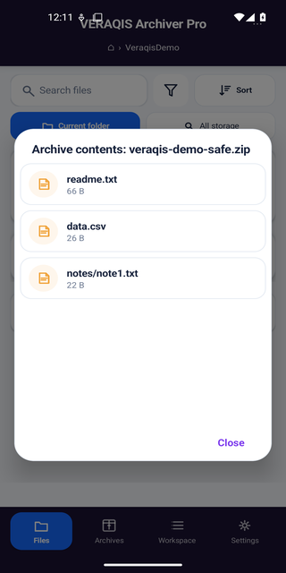

Android archive tools that tell you what can be trusted.
Open and extract archives safely with VERAQIS Archiver. When a ZIP is damaged, Recovery Pro finds what can still be proven.
Have the file to hand? Check a ZIP archive locally in your browser — nothing is uploaded. Or read the guide for end of central directory not found · CRC failed · all guides

Use VERAQIS when
Everyday situations where checking first — and recovering only what is provable — is the safe move.
A ZIP file won't open and you need to find out why.
An archive appears damaged and you need to know what's recoverable before deciding what to do.
A download or copy stopped halfway and the archive is cut short.
You need to open and extract an archive safely on Android before trusting its contents.
A confidential file must stay offline, and uploading it to a repair site is not an option.
You need to tell verified recovery from uncertain output before you trust the result.
A listed format is not a promise that every damaged file can be recovered — recovery depends on what surviving bytes can prove.
One brand, two Android apps
Free handles everyday archives safely. Pro handles damaged ZIPs carefully. One rule across both: a result is marked verified only after an independent check supports it.
VERAQIS Archiver
A simple, free Android archiver with structural safety checks before extraction. Open, inspect and extract safely — fully offline, no account, no telemetry.
Available — Free
VERAQIS Recovery Pro
A specialised Android recovery app for ZIP archives that no longer open or extract correctly. Deep local recovery, verified entry by entry.
Closed test planned €9.99 one-time
Formats beyond ZIP have experimental engine-level work but are not part of Recovery Pro's stable commercial promise — see the format reference for the honest per-format position. See Reports & Verification and the Test Record for the evidence behind every claim.
Verified, or clearly unknown
The simple version, before any of the technical terms.
Each recovered part is checked before it is marked as verified. Anything that cannot be proven remains clearly labelled as unknown.
Want the detail? See how verification works in Reports & Verification, Changelog, the measured results in the Test Record, and the commands in the docs.
Damaged ZIP, health 15/100 → VERAQIS found ZIP_EOCD_001 → rebuilt the archive → 8412B recovered, 0B lost.
This is the product position in one case: prove the recoverable structure, write a manifest, and refuse to dress guesses up as recovered data.
Broken structure
The ZIP end-of-central-directory record is missing after truncation.
Rule-keyed finding
The report names ZIP_EOCD_001 and scores health at 15/100.
Central directory rebuild
VERAQIS rebuilds from surviving local headers instead of inventing missing bytes.
Manifested result
8412B recovered, 0B lost, with a recovery manifest.
VERAQIS is not a miracle recovery button. It is an evidence-first Android archive tool: check the risk, recover the provable parts, and say clearly when the data is not recoverable.
Most recovery tools sell output
- They lead with how much data was returned.
- They may not separate proven data from guessed data.
- They rarely show what was safely refused.
VERAQIS sells proof
- Verified bytes and entries are counted separately from damaged and unknown ones.
- False output is a hard gate, not a footnote.
- Unknown regions remain unknown when evidence is missing.
Security before recovery
Inputs are treated as hostile. Source files are opened read-only, untrusted work is sandboxed, and output goes to a destination you choose.
No password or restriction bypass
Encrypted files are detected and reported. VERAQIS does not decrypt, recover passwords, remove restrictions or claim otherwise.
Useful even when it abstains
An honest report can still help: it tells you the format, the defect, what was checked, and why a recovery was refused.
Common questions
Plain answers for people deciding which VERAQIS Android app they need.
Which VERAQIS Android app do I need?
VERAQIS Archiver, free, for everyday archives: open, inspect and extract safely. VERAQIS Recovery Pro, in closed testing, for a ZIP that no longer opens or extracts correctly.
Is VERAQIS available on desktop or other platforms?
No. VERAQIS is Android-only. There is no active desktop or CLI product on this site.
Does VERAQIS send files to a server?
No. Both apps process files on the device. There is no cloud upload, no account and no telemetry.
Can VERAQIS recover encrypted files or passwords?
No. Encrypted archives are detected and reported, but VERAQIS does not decrypt, recover passwords, or bypass restrictions.
Research behind the Android recovery engine
Every figure below comes from running our own engine against a corpus with known answers, and every report links the data it was derived from. Negative results are published next to the positive ones. These are measured research results, not shipped Pro capabilities — see the stable Recovery Pro scope for what the product actually commits to today.
One bit flip in a solid 7z archive
A solid archive is not all-or-nothing. In a real 541-file archive a flip at 95% of the payload still left 501 files recoverable byte-exact — and false_files = 0 in every cell.
CRC-32 collisions that pass gzip -t
We built archives whose contents differ from the original but whose CRC-32 matches, and the native tools call them healthy. Five formats, two independent verifiers.
Recovering past a corrupted block
Stock xz -d abandons a whole stream on one bad block. Block-independent salvage recovered 9 of 10, each re-verified by its own CRC-64.
We measured 12 formats, then cancelled the engine
Can independent checksums be combined to solve for lost bytes? Measured first: the joint-sufficient share is 0.00 everywhere, so the solver was never built.
What has actually been checked
The beta release page is intentionally conservative: it shows checks that passed, warns about what is missing, and does not hide beta limits.
cargo test --workspace --all-targetsArchiver is free. Recovery Pro is a planned one-time purchase.
VERAQIS Archiver is free forever and downloadable today. VERAQIS Recovery Pro's planned launch price is €9.99 one-time — a hypothesis, not a live offer, until closed testing ends and a Google Play listing exists. See pricing for the full breakdown.